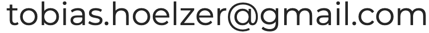

Speaker at TEDx. With over a million views among the five most watched Slam Speakers in Germany and once featured on national television. Host and Moderator at Science Slam Berlin SO36.
You can invite me as a keynote speaker & moderator, also I like podcasts. ➔ 
2022: Keynote speaker @ HUGO BOSS Tech Days - AI and the Future of Learning
2022: Keynote Speaker @ Re-Work AI Enterprise Track
2022: Panel Host @ Re-Work Deep Learning Track: The ROI of Deep Learning
2022: Podcast Guest @ Marketing 0 to 1 (vCOACH | Künstliche Intelligenz KI Startups)
2020: Podcast Guest @ SAP Education Newscast - Digitales Kommunikationstraining mit vCOACH – dem Gewinner des HR Innovation Awards 2020
2019-2020: Moderator @ SO36 Science Slam Berlin
2019: Invited Host for the International Media Slam in Chisinau, Moldova
2018: TEDx Jena - The Limits of Artificial Intelligence
2017: Among the five most watched Science Slam Speakers in Germany
2014: RWTH Aachen Graduation Ceremony (Deutsche Bank Stadion)
2014: Science Slam Germany - National Championships